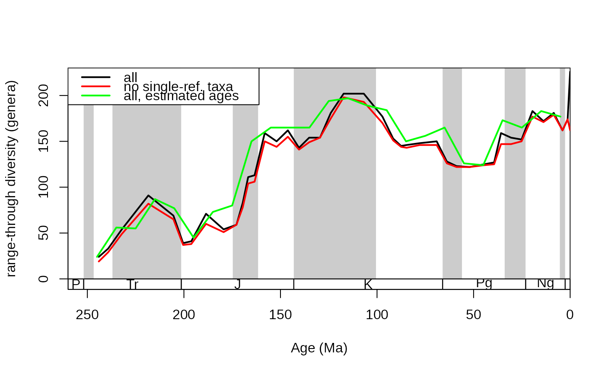

This function calculates various metrics from occurrence datasets in the form of time series.
Usage
divDyn(
x,
tax,
bin = NULL,
age = NULL,
revtime = FALSE,
breaks = NULL,
coll = NULL,
ref = NULL,
om = NULL,
noNAStart = FALSE,
data.frame = TRUE,
filterNA = FALSE
)Arguments
- x
(data.frame)Fossil occurrence table.- tax
(character)Variable name of the occurring taxa (variable type:factororcharacter- such as"genus"- bin
(character)Variable name of the discrete bin numbers of the occurrences. This variable should benumeric. Time flows from lower to higher values by default. Userevtimeto reverse this order.- age
(character)Variable name of the ages of the occurrences that will be sliced with theslicefunction using the intervals provided inbreaks. This variable should benumeric. Time flows from higher to lower values by default. Userevtimeto reverse this order.- revtime
(logical)Argument for reversing the default direction of time. Setting this argument toTRUEwill make time flow from higher to lower values whenbinis used, and from lower to higher values, whenageis given. CAUTION: Failing to set this argument properly can make originations become extinctions and vice versa!- breaks
(numeric)IfNULL(default) the used values in thebinvariable will designate independent time slices that follow each other in succession. If a vector is provided, than the numeric entries inbinwill be binned similarly to thehistorcutfunction. The order of elements in this vector is arbitrary.- coll
(character)The variable name of the collection identifiers. (optional, only for use with the internalomitfunction)- ref
(character)The variable name of the reference identifiers. (optional, only for use with the internalomitfunction)- om
(character)Theomargument of theomit()function. If set toNULL(default), then no occurrences will be omitted before the execution of the function.- noNAStart
(logical) Useful when the entries in the
binvariable do not start from bin no. 1, but positive integer bin numbers are provided. ThennoNAStart=TRUEwill cut the first part of the resulting table, so the first row will contain the estimates for the lowest bin number. In case of positive integer bin identifiers, and ifnoNAStart=FALSE, the index of the row will be the bin number.- data.frame
(logical)Should the output be adata.frameor amatrix?- filterNA
(logical)ThefilterNAparameter of theomitfunction.
Details
The following variables are produced:
bin: Bin number, or the numeric identifier of the bin.
tThrough: Number of through-ranging taxa, taxa that have first occurrences before, and last occurrences after the focal bin.
tOri: Number of originating taxa, taxa that have first occurrences in the focal bin, and last occurrences after it.
tExt: Number of taxa getting extinct. These are taxa that have first occurrences before the focal bin, and last occurrences in it.
tSing: Number of stratigraphic singleton (single-interval) taxa, taxa that only occur in the focal bin.
t2d: Number of lower two timers (Alroy, 2008; 2014), taxa that are present in the i-1th and the ith bin (focal bin).
t2u: Number of upper two timers (Alroy, 2008; 2014), taxa that are present in the ith (focal) and the i+1th bin. (Alroy, 2008; 2014)
tGFu: Number of upper gap-fillers (Alroy, 2014), taxa that occurr in bin i+2 and i-1, but were not found in i+1. (Alroy, 2014)
tGFd: Number of lower gap-fillers (Alroy, 2014), taxa that occurr in bin i-2 and i+1, but were not found in i-1. (Alroy, 2014)
t3: Number of three timer taxa (Alroy, 2008; 2014), present in bin i-1, i, and i+1. (Alroy, 2008; 2014)
tPart: Part timer taxa (Alroy, 2008; 2014), present in bin i-1,and i+1, but not in bin i.
extProp: Proportional extinctions including single-interval taxa: (tExt + tSing) / (tThrough + tOri + tExt + tSing).
oriProp: Proportional originations including single-interval taxa: (tOri + tSing) / (tThrough + tOri + tExt + tSing).
extPC: Per capita extinction rates of Foote (1999). -log(tThrough/(tExt + tThrough)). Values are not normalized with bin lengths. Similar equations were used by Alroy (1996) but without taking the logarithm.
oriPC: Per capita origination rates of Foote (1999). -log(tThrough/(tOri + tThrough)). Values are not normalized with bin lengths. Similar equations were used by Alroy (1996) but without taking the logarithm.
ext3t: Three-timer extinction rates of Alroy (2008). log(t2d/t3).
ori3t: Three-timer origination rates of Alroy (2008). log(t2u/t3).
extC3t: Corrected three-timer extinction rates of Alroy (2008). ext3t[i] + log(samp3t[i+1]).
oriC3t: Corrected three-timer origination rates of Alroy (2008). ori3t[i] + log(samp3t[i-1]).
divSIB: Sampled-in-bin diversity (richness), the number of genera sampled in the focal bin.
divCSIB: Corrected sampled-in-bin diversity (richness). divSIB/samp3t*totSamp3t, where totSamp3t is total three-timer sampling completeness of the dataset (Alroy, 2008).
divBC: Boundary-crosser diversity (richness), the number of taxa with ranges crossing the boundaries of the interval. tExt + tOri + tThrough.
divRT: Range-through diversity (richness), all taxa in the interval, based on the range-through assumption. (tSing + tOri + tExt + tThrough).
sampRange: Range-based sampling probability, without observed range end-points (Foote), (divSIB - tExt - tOri- t-Sing)/tThrough
samp3t: Three-timer sampling completeness of Alroy (2008). t3/(t3+tPart)
extGF: Gap-filler extinction rates of Alroy(2014). log((t2d + tPart)/(t3+tPart+tGFu))
oriGF: Gap-filler origination rates of Alroy(2014). log((t2u + tPart)/(t3+tPart+tGFd))
E2f3: Second-for-third extinction propotions of Alroy (2015). As these metrics are based on an algorithmic approach, for the equations please refer to the Alroy (2015, p. 634, right column and Eq. 4)). See source code (https://github.com/divDyn/r-package) for the exact implementation, found in the Metrics function in the diversityDynamics.R file.
O2f3: Second-for-third origination propotions of Alroy (2015). Please see E2f3.
ext2f3: Second-for-third extinction rates (based on Alroy, 2015). Transformed to the usual rate form with log(1/(1-E2f3)).
ori2f3: Second-for-third origination rates (based on Alroy, 2015). Transformed to the usual rate form with log(1/(1-O2f3)).
References:
Foote, M. (1999) Morphological Diversity In The Evolutionary Radiation Of Paleozoic and Post-Paleozoic Crinoids. Paleobiology 25, 1–115. doi:10.1017/S0094837300020236.
Alroy, J. (2008) Dynamics of origination and extinction in the marine fossil record. Proceedings of the National Academy of Science 105, 11536-11542. doi: 10.1073/pnas.0802597105
Alroy, J. (2014) Accurate and precise estimates of origination and extinction rates. Paleobiology 40, 374-397. doi: 10.1666/13036
Alroy, J. (2015) A more precise speciation and extinction rate estimator. Paleobiology 41, 633-639. doi: 10.1017/pab.2015.26
Examples
# import data
data(corals)
data(stages)
# calculate metrics of diversity dynamics
dd <- divDyn(corals, tax="genus", bin="stg")
# plotting
tsplot(stages, shading="series", boxes="sys", xlim=c(260,0),
ylab="range-through diversity (genera)", ylim=c(0,230))
lines(stages$mid, dd$divRT, lwd=2)
# with omission of single reference taxa
ddNoSing <- divDyn(corals, tax="genus", bin="stg", om="ref", ref="reference_no")
lines(stages$mid, ddNoSing$divRT, lwd=2, col="red")
# using the estimated ages (less robust) - 10 million years
# mean ages
corals$me_ma <- apply(corals[, c("max_ma", "min_ma")], 1, mean)
# ages reverse the direction of time! set ages to TRUE in this case
ddRadio10 <- divDyn(corals, tax="genus", age="me_ma",
breaks=seq(250,0,-10))
lines(ddRadio10$me_ma, ddRadio10$divRT, lwd=2, col="green")
# legend
legend("topleft", legend=c("all", "no single-ref. taxa", "all, estimated ages"),
col=c("black", "red", "green"), lwd=c(2,2,2), bg="white")
